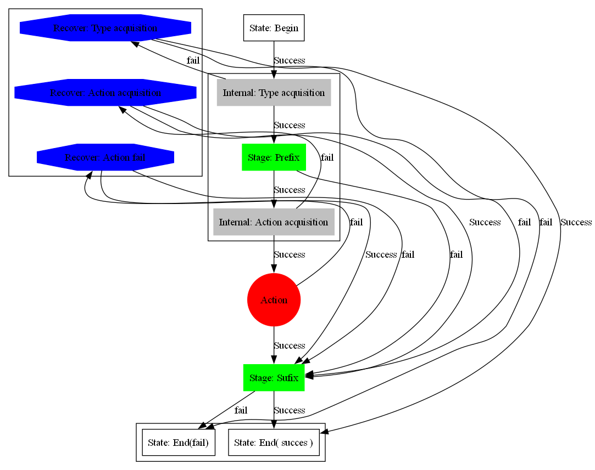

Protocol to serialize Property( actually anything )
- States
-
- Begin
- Doing some initialization.
- Type acquisition
- Retrieve type of property so we can find how to threat it.
- Prefix
- Do something e.g print type property.
action acquisition- Based on type find what to do whit this type.
- Do
action - Do action.
- Suffix
- Post action action.
- End
-
- Fail
- If
action fails do this.
- Pass
- If
action pass do this
- Recover
-
action acquisition- No action for given type. Exit or do something generic .
action fail- If action fails do something e.g. reconnect, try again. .
type acquisition- Do something generic or fail
- Graph
- 